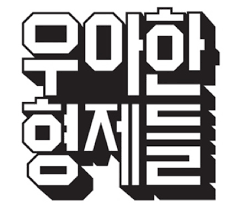

우아한 형제들

제가 읽었던 책 중 하나인 ‘요즘 우아한 개발’은 우아한 형제들의 내부 개발 문화를 다룬 책입니다. 이 책을 통해 우아한 형제들의 개발자 문화가 공유를 핵심 가치로 삼고 있으며, 모든 개발자가 배우고 성장하려는 열정을 가지고 있다는 점을 느낄 수 있었습니다. 이처럼 활발하고 성장 지향적인 환경에서 일한다면, 저 역시 더 나은 개발자로 성장할 수 있을 것이라는 확신이 들었습니다. 이러한 이유로 우아한 형제들에 백엔드 직군으로 지원하고자 합니다. 우아한 형제들의 개발자 문화 속에서 제 역량을 발전시키고, 함께 성장하는 경험을 하고 싶습니다.